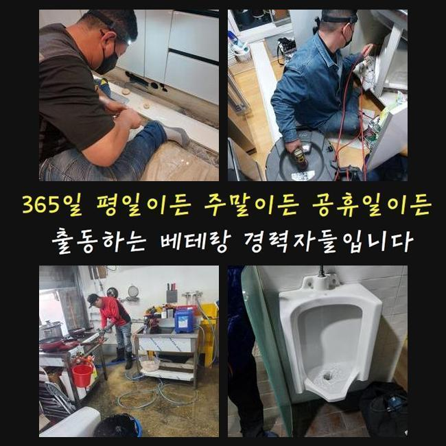
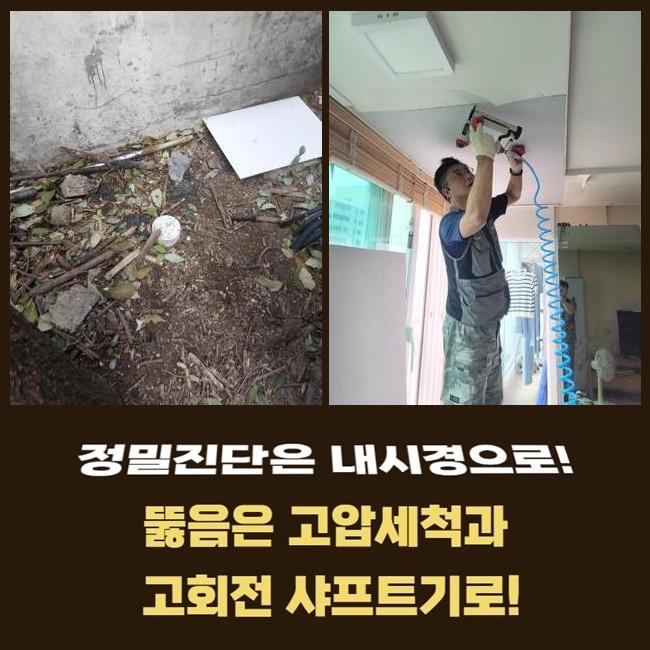
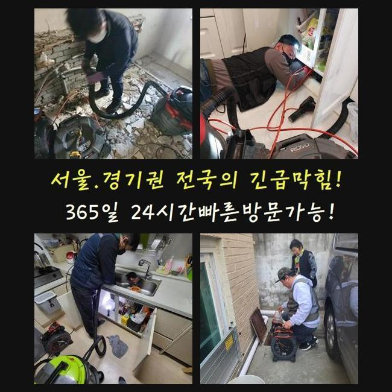
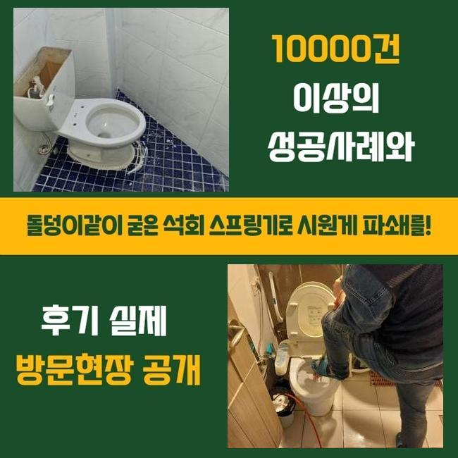
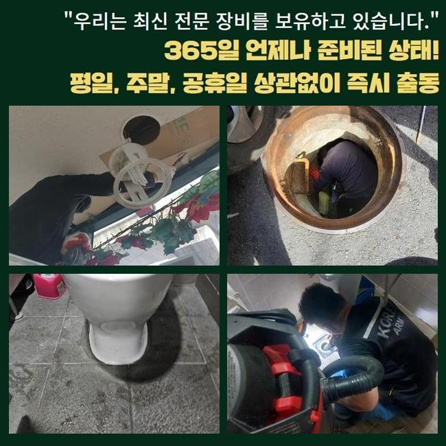
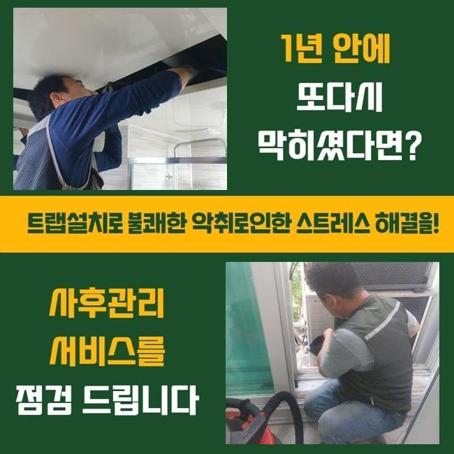

🏠 용산 동자동변기역류 이촌동 하수구뚫는업체 설비업체
용인 싱크대막힘 전문 시공 후기

📋 작업 개요
- 위치: 용인
- 서비스 유형: 싱크대막힘, 변기막힘, 하수구막힘, 배관막힘, 누수수리, 역류해결, 뚫는업체, 배관청소, 고압세척
- 작업 일시: 2025. 2. 16. 1:17
- 업체명: 하수구수사대 (010-5615-2118)
🔍 문제 상황
용산 동자동변기역류 이촌동 하수구뚫는업체 설비업체
어느장소든 배관이 막히면 조속하게 방문해서 해결해주는 업체인데요
대다수의 경우엔 셀프조치를 취하실때 배수구 클리너나 락스같은 것들을 활용하실거에요
클리너같은 것을 사용하면 배관안속에 누적된 이물질들을 없애는데 도움은 됩니다
그렇지만 이런 방식들을 진행해도 소거하기 쉽지않은 이물이 있답니다
이물이 쌓이면서 덩어리형태로 굳게되는 석회물이에요
고착물의 경우엔 내시경카메라로 막힌상황에 대하여 알아본뒤 다양한 방식을 통해서 이물을 없애주는것이 요구됩니다
업체에게 맡겼을때 무슨 방식으로 굳어버린 오염물을 없애는지 며칠전 방문한 작업내용으로 안내드릴게요
이번시간에 알아볼 현장장소는 가정안에서 발생하게된 막힘현상 입니다
화장실부분에 배수구가 막히게되면서 문의를 주셨습니다
저흰 고객께서 전달주신 정보와 하수구를 살피며 원인파악에 돌입했죠
고객분은 이틀전부터 물이 빠지는것이 점차점차 느려지고 있었고 이상한 악취도 동반되었다고 알려주셨죠

🔎 원인 분석
💡 전문가 진단: 정밀 진단 장비를 사용하여 슬러지의 고착 여부를 판명하고 타격/세척 작업을 실시했습니다.
해결하기위하여 과탄산소다와 락스로 청소하신 상태였죠
그치만 악취의경우 해결되지않고 물이 빠지는것도 원활한상태로 복구되지 않으셨어요
시간이흐르며 되레 배수구는 심화된 상태로 막히게되서 신속하게 해결해달라고 의뢰주신 거에요
의뢰자분이 말씀해주신 부분들과 하수구를 살피며 원인 찾기에 돌입했어요
악취까지 발생된 하수구막힘은 막히게된 원인에 대하여 정확히 찾는게 중요한데요
석션도구를 써서 넘친 하수를 흡입해준뒤 장착된트랩을 분리하기 시작했어요
배관주변을 확인해봤는데 특별한 증상이 있는것은 아니었어요
하수구내부를 확인시켜주는 배관내시경을 사용해봤어요
카메라장비가 하수구내에 진입하니 통로내에 잔해물들이 화면에 나타났어요
확인해봤지만 막히는문제를 일으킬 상태는 아니다보니 더욱더 깊숙하게 투입해보니 막힌이유를 알수있었죠
머리칼과 샤워용품 찌꺼기들이 뭉쳐버린 슬러지상태의 고착물이었어요
하수구내벽에 달라붙은채 덩어리진 이물은 하수구통로를 막아버리고 작은통로에 이물질들이 지속적으로 썩으면서 냄새문제도 발생한거죠

🔧 작업 과정
석회덩어리는 여러가지의 이물이 뭉치며 굳은형태로 만들어지게 되는것인데 배관막힘의 근본적인 원인입니다
날이가면서 딱딱한 형태로 변할수있고 제거과정도 굳은형태마다 차이점이 있답니다
내시경을 통해 확인한 오염물은 크기상태와 굳은점이 심해보이지 않았기에 흡입기로 제거해볼수 있었습니다
석션기계는 하수도내에 누적되어진 오염물을 빨아들이는 장비라고 할수가 있는데요
저희들은 배관파손이 일어나지 않게끔 세척하기위해 카메라를 같이 투입하여 작업해 주었죠
내부를 확인하면서 문제지점에서 석션기로 빨아들여 이물을 제거했어요
배수관 깊은곳까지 하수도촬영기로 살펴보며 달라붙어있는 오염물과 물때들을 제거해줬습니다
제거하는 과정들을 세세하게 진행한뒤 배관촬영기로 하수관내부를 살펴보는것을 반복해서 진행해줬어요
반복적인 과정을 거치니 퇴적되어있던 찌든때나 잔해물질이 말끔히 제거된것이 모니터로 확인할수있었죠
이물을 전체적으로 제거하자 심했던 악취문제도 줄어드는것을 확인할수있었네요
마치기전에 배수상태를 점검하고자 물을틀은후 배수구에 흘려보내면서 배수상태에 대해 점검했죠
다량으로 잔해물을 빼냈으므로 문제를 보이지않고 흐르는것을 확인했죠
물빠짐 테스트를 마친뒤에 철수할수 있었답니다
재차 말씀드리지만 전문업체의 지원이 요구되는 이유를 알려드리자면 막힘문제가 일어난 이유에대해 확실히 검사해야 뚫어낼수있어요
덩어리진 오염물의 경우에는 클리너같은 제품을 통하여 제거해내기가 쉽지않죠
그러나 해결하지않고 내버려둔다면 누수나 역류문제로 이어지기도 한답니다
단단한 형태로 오염물들이 굳어버렸다면 석션기말고 다른기계가 필요합니다
샤프트기계로 석회물들을 분쇄할수있어 막힘상태마다 활용되는 도구들이 달라지기도 하죠
하수구가 막히게되면 인터넷에서 검색했던 다양한 방법들로 뚫을수있다고 생각하는 사람들이 많은데요


✅ 작업 완료
이렇게 여러번 시도해봐도 배수되는게 느리게 흘러가거나 악취현상까지 배수관에서 올라온다면 전문업체에 맡기는게 좋습니다
싱크대나 샤워실처럼 물이용이 많은장소는 정기적으로 검사하여 막힘증세들을 방지하는것이 좋으니 참고해주세요!
자가적으로 예방할수있는 과정들을 간단히 말씀드려보면 트랩과 배수구망을 깔아서 악취증세와 막힘현상을 예방해볼수 있답니다
공용시설처럼 많은세대가 밀집된 건물일경우 조속한 처리가 필요하니 언제라도 맡겨주신다면 조속히 내방해드릴게요
작업계획을 투명하게 공개하니 고객님이 편하신때에 문의주신다면 상세하게 상담을 진행해드릴게요




⚠️ 베란다 누수 및 방수 관리 방법
- ✅ 비가 많이 올 때 창틀 주변이나 아래층 천장에 얼룩이 생기는지 정기적으로 확인해 보세요.
- ✅ 우수관 주변 실리콘 마감이 들뜨거나 깨진 틈새가 있는지 손상 여부를 수시로 체크하세요.
- ✅ 베란다 바닥 타일의 줄눈(메지)이 소실되면 그 틈으로 물이 침투하여 누수가 유발됩니다.
- ✅ 누수 의심 증상 발견 시 방치하면 아래층 손실이 커지므로 즉시 전문가의 진단을 받으십시오.
💡 핵심 정리
- 확실한 장비 작업(내시경 점검 및 샤프트 스케일링)으로 원인을 뿌리 뽑습니다.
- 작업 후 1년 이내에 동일한 부위 재발 시 100% 무상 A/S 서비스를 보장합니다.
- 서울 · 경기 · 인천 전 지역에 24시간 언제든 긴급 출동할 수 있도록 항시 대기 중입니다.
❓ 자주 묻는 질문 (FAQ)
🚨 용인 싱크대막힘 문제로 고민이신가요?
정확한 원인 진단과 확실한 시공으로 재발 없는 해결을 약속드립니다.
24시간 긴급 출동 | 서울 · 경기 · 인천 전지역 | 1년 내 재발 시 무상 A/S